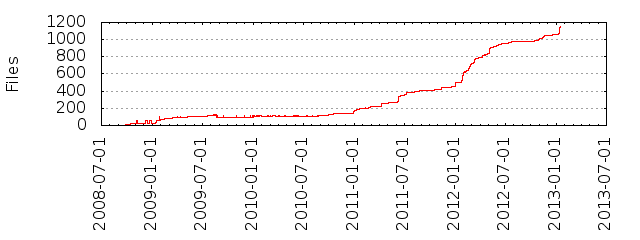

Files
- Total files
- 459
- Total lines
- 60871
- Average file size
- 133414.36 bytes

| Extension | Files (%) | Lines (%) | Lines/file |
|---|
| 79 (17.21%) | 23232 (38.17%) | 294 |
| avi | 1 (0.22%) | 12596 (20.69%) | 12596 |
| conf | 1 (0.22%) | 27 (0.04%) | 27 |
| css | 3 (0.65%) | 329 (0.54%) | 109 |
| csv | 2 (0.44%) | 218 (0.36%) | 109 |
| gif | 3 (0.65%) | 0 (0.00%) | 0 |
| gz | 1 (0.22%) | 6984 (11.47%) | 6984 |
| hs | 13 (2.83%) | 1548 (2.54%) | 119 |
| html | 3 (0.65%) | 616 (1.01%) | 205 |
| ico | 1 (0.22%) | 0 (0.00%) | 0 |
| jpg | 50 (10.89%) | 12635 (20.76%) | 252 |
| js | 6 (1.31%) | 549 (0.90%) | 91 |
| markdown | 1 (0.22%) | 3 (0.00%) | 3 |
| page | 61 (13.29%) | 24582 (40.38%) | 402 |
| pdf | 50 (10.89%) | 180758 (296.95%) | 3615 |
| png | 174 (37.91%) | 23485 (38.58%) | 134 |
| st | 2 (0.44%) | 22 (0.04%) | 11 |
| svg | 2 (0.44%) | 246 (0.40%) | 123 |
| tex | 1 (0.22%) | 235 (0.39%) | 235 |
| txt | 5 (1.09%) | 6520 (10.71%) | 1304 |